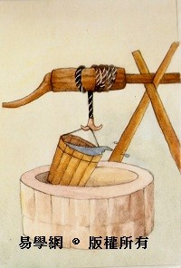
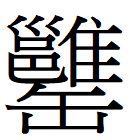
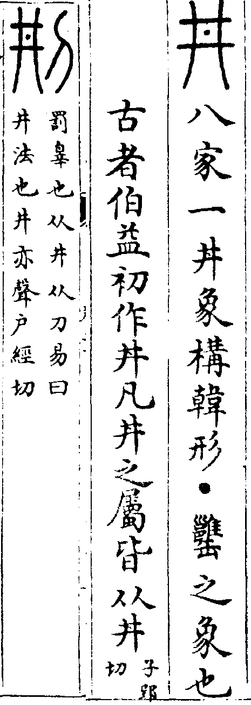

井卦 水風井
井，改邑不改井，无喪无得，往來井井。汔至，亦未繘井，羸其瓶，凶。初六，井泥不食，舊井无禽。九二，井谷射鮒，甕敝漏。九三，井渫不食，為我心惻，可用汲。王明，並受其福。六四，井甃无咎。九五，井冽，寒泉食。上六，井收勿幕，有孚元吉。
【卦名】
今本：井 歸藏：井 帛書：丼 秦簡：井 上博簡：汬
井卦帛書作丼，丼為井字的繁化字。上博簡作汬，為阱的異體字，也可假借為井。
井原意為地面出水的地方，引申亦有泉水之義。由於水源聚人，因此有井的地方往往成為人的聚集地而成村邑。井又可指古代的井田制，也是《說文》說的「八家一井」。
| 
象曰：木上有水，井，君子以勞民勸相。（圖：小配） |
《說文》作「丼」：「八家一丼，象構韓形。•，之象也。古者伯益初作丼，凡丼之屬皆从丼。」段玉裁注：「《穀梁傳》曰：古者公田為居，丼竈葱韭盡取焉。《風俗通》曰：古者二十畝為一井，因為市交易，故稱市井。皆謂八家共一井也。《孟子》曰：方里而井，井九百畝。其中為公田。此古井田之制，因象井韓而命之也。謂井也。韓，井上木闌也。其形四角或八角，又謂之銀牀。」按：，通甕，井卦九二「甕敝漏」。韓為井垣，段玉裁說的井上圍欄。
依《說文》，井為古代的戶政編制，八家為一井，即古代的井田制度。
《周禮》：「九夫為井，四井為邑，四邑為丘，四丘為甸，四甸為縣，四縣為都，以任地事而令貢賦，凡稅斂之事。乃分地域而辨其守，施其職而平其政。」「九夫為井，井間廣四尺，深四尺，謂之溝。方十里為成，成間廣八尺，深八尺，謂之洫。方百里為同，同間廣二尋，深二仞，謂之澮。」「九夫為井」的夫，為田地的單位，九塊田地成一井，中間為公田。周圍八田分屬八戶人家，因此八家一井。
伯益初作井的傳說，則出自《世本》。宋衷：「《世本》云：化益作井。化益，伯益也，堯臣。」另《淮南子．本經訓》：「伯益作井，而龍登玄雲，神棲昆侖。」只不過，伯益所作的「井」究竟是水井？刑法？陷阱，還是《說文》說的「八家一井」的制度？恐怕還有得爭議。
井的甲骨文和今文差不多，象水井之形，四畫為水井的圍欄，而中間中空處為井口。篆文中間多一點作「丼」則是後來所加入，徐中舒認為，中間一點象徵汲水之器：「篆文增．者，示其為汲水所用之器，籍以別捕獸用陷井之井。」這一點也是《說文》所謂的「甕之象也」。
古文中的井，也作「阱」用，即捕獸的陷阱。依徐中舒看法，後來篆文的井字作丼，是為了與作為陷阱的井字作區分。
井也有刑義，法、罰的意思。「刑」古字原作「㓝」，《說文》：「㓝，罰辠也，从井从刀。《易》曰：井，法也。井亦聲。」段玉裁注：「此引《易》說从井之意。井者法也，蓋出《易》說，司馬彪《五行志》引易說同。《風俗通》亦云：井者法也、節也。」許慎所引「《易》曰」不見於今本十翼，可能是漢代時的易傳內容，漢易亦訓井為法，如鄭玄即作此解。
井（刑）也可作型義，典型、典範、效法的意思，如《詩經．文王》「儀刑文王」，《思齊》「刑于寡妻」，《蕩》「尚有典刑」。
卦義
井卦字義：
- 《說文》：八家一井。（井田制度）
- 水井，用以養人：傳統註解的主流。
- 㓝，通刑、型，法也：漢代註解採用此義。
- 阱，陷阱：當代學者開始採用此義。
傳統註解井卦取水井之義。井以出泉，泉以養人，貴在自清。比喻君子只要誠心養德，民將歸之。
孔穎達這麼說：「古者穿地取水，以瓶引汲，謂之為井。此卦明君子脩德養民，有常不變，終始無改，養物不窮，莫過乎井，故以脩德之卦取譬名之井焉。」鄭玄：「井以汲人，水无空竭，猶人君以政教養天下，惠澤无窮也。」
井卦經文講的是水井如何從敗壞到修復好，最後又為人所飲用的過程。比喻君子修德，最後終為人民所擁戴。井水本身固定在原地不會移動，一旦水質不好或是泉水乾涸，大家就會棄井而去；反之若將水井修好，泉水甘美，群眾自動前來飲水，聚集成邑。
井卦是繼困卦而來，《序卦》：「升而不已必困，故受之以困。困乎上者必反下，故受之以井。」困卦是人一直往上爬升之後升無可升，然後窮困無路，井卦則是重新回到基礎，修養德行，這也是窮中求通之正道。
井與困也是相對的一卦，困卦卦義為故廬，無水、窮困。井卦則是修井開源，窮而通之道。有趣的是，井和困兩卦講的似乎都是與「居住」有關，困像是一個被放棄而不再居住的廬舍，井則是遭廢棄之後而重新修好的舊邑而重新聚集人民。
《彖傳》說：「巽乎水而上水，井，井養而不窮也。」井卦卦象為木下於水又裝水而出，也就是以木桶汲水，養人而源泉不窮之象。內巽入，外坎險，漸進以通險，雖有險而能逐漸化解之。又巽風本就有驅散坎險之效，如渙卦，取象即是巽風吹散坎險，散心之象。因此井卦亦帶有巽風散險之義。
得井卦凡事應該反躬自省，多積陰德，未雨綢繆，等到自己修身積德夠了，自然水到渠成。若是急功近利，不但欲速而不達，反而遭災，大凶。
六爻以水井形體取象，並以能夠出水養人為有功而吉。下三爻都是未能出水以養人者：初爻為井底的泥，九二為井谷，九三雖是清潔的井水，但還在內卦，尚未出於井。外三爻則是具養人之功者：六四已至外卦，為井壁，也象徵水井的硬體建設。至九五為有功而能養人，曰寒泉食。上六則是井道之成。
漢代如鄭玄和許慎，以井為法。雖然經文顯然談的比較像是水井，但水可引喻為法。就卦象來說，坎為水為法為阱。若以水引喻法，那麼六爻可作為法對於民的影響，初六是拘泥而不行之法。九二是權貴所玩弄之法（射鮒象徵玩樂），九三為遭棄置不用的良法。六四為法之實行框架與基礎建設，九五為益民之良法，而井冽寒泉食亦有刑罰輕之引喻。上六為行之於世的大成之法。
清代王引之認為井卦的井有二義：一是水井，二是陷阱的阱。詳說可參考初六「舊井无禽」注解。當代易學家多有持第二說者，認為井卦談的當是陷阱之事。陷阱用以捕捉禽獸，如「舊井无禽」為破舊的陷阱已經難有收獲。王引之說法可供參考，井字可依經文前後文脈絡，多方取義。但若要將全卦的井都當作阱用，則言過其實了。
井，改邑不改井，无喪无得，往來井井。汔至，亦未繘井，羸其瓶，凶。
- 《彖》曰：巽乎水而上水，井，井養而不窮也。改邑不改井，乃以剛中也；汔至亦未繘井，未有功也；羸其瓶，是以凶也。
- 《象》曰：木上有水，井，君子以勞民勸相。
- 《繫辭》：「困，德之辨也。井，德之地也。」「困，窮而通。井，居其所而遷。」「困以寡怨，井以辨義。」
- 《序卦》：困乎上者必反下，故受之以井。井道不可不革，故受之以革。
- 《雜卦》：井通而困相遇也。
- 《易之義》：井者得之徹也。
水井，遷移村邑但不遷移水井，井水原本取之不竭，不會變少也不會變多，大家無不來來往往，井然有序地取用井水。但現在水井乾涸無水了，還來不及取得井水，又打破取水的瓶子，凶。
井水本來源源不絕，來往取水的人很多。但後來由於維護不良，水井壞了，不再出泉而乾涸，因而凶。
前半喻指君子之德，後半喻指修德而不能克終者，《書經．旅獒》所說的：「為山九仞，功虧一簣。」孔穎達：「言亦者，不必之辭，言不必有如此不克終者。計覆一瓶之水，何足言凶？以喻人之修德不成，又云但取喻人之德行不恒，不能慎終如始，故就人言凶也。」
高亨、鄧球柏讀作：「改邑不改井，无喪无得。往來井，井汔至，亦未繘井，羸其瓶，凶。」
另解，前後半的井或許指不同的事。前半可能談井田，往來井井為人來人往於井然有序的井田之間。「九夫為井，四井為邑」，改邑不改井，更改了邑的編制，但井的編制未改。
【字義】
改：《說文》：「更也，从攴、己。」李陽冰：「己有過，攴之即改。」改為更改、變更，改變之義，亦可引申為遷移。依李陽冰注，「改」本義意指自己的改過遷善，此亦符合井卦之卦義。改邑不改井，「改」作遷移義，自古只有人跟著水源而居，沒有水源跟著人走的。因此只有遷移村邑以就井，沒有遷移水井以就村邑的。這是比喻君子若是有德，則自然會得人心，讓眾人追隨於他。孔穎達：「此明井體有常，邑雖遷移而井體无改。」程頤：「井之為物，常而不可改也。邑可改而之他，井不可遷也，故曰改邑不改井。」井與邑也是周的行政編制，所謂「九夫為井，四井為邑」。改邑不改井，謂邑的編制改變，但下一層井的編制並沒改變。
无喪无得：形容井水，水量不會因為被取用而減少，也不會因沒人取用而增加。有如君子之德，不會因為膏澤之人多而減損，也不會因為膏澤之人少而增益。孔穎達：「此明井用有常德，終日引汲，未嘗言損。終日泉注，未嘗言益。」
井井：有多義，一、井井有條，條理分明的樣子。言取水之人，往來相當有秩序。或亦指井田井井有條之貌。《荀子．儒效篇》：「井井兮其有條理也。」 二、絜靜的樣子。王弼：「不渝變也。」意指井德不變，孔穎達將其詮釋為水的洗滌之性不渝變，而井井則在形容水之洗滌使人潔淨，引申至人心則為絜靜：「此明性常。井井，絜靜之貌也。往者來者，皆使絜靜，不以人有往來改其洗濯之性，故曰往來井井也。」 三、井其井，意指水井盡其養人之用，讓人人都可以自己的方式享用水井。朱熹：「改邑不改井，故无喪无得，而往者來者，皆井其井也。」程頤：「往來井井，其用也周。常也，周也，井之道也。」《日講》：「井體不遷，无喪无得，而往來者皆得井其井，以為利乎。」 四、往是井，來也是井。荀爽：「此本泰卦。陽往居五，得坎為井；陰來在下，亦為井，故曰往來井井也。」
汔：音企，乾涸也。井為出泉之所，原本應該是泉水源源不絕，但可能因積泥而讓泉水難出，又遇乾旱，因此乾涸。《說文》：「汔，水涸也。」段玉裁：「《大雅．民勞》傳曰：汔，危也。《周易》汔至亦未繘井，小狐汔濟。虞翻曰：汔，幾也。皆引伸之義。水涸為將盡之時，故引伸之義曰危、曰幾也。」汔從乾涸引申為幾，幾乎、幾近，盡頭、危險。易學家多取「幾」義，幾近的意思。虞翻：「汔，幾也。」《釋文》：「汔，徐許訖反，幾也。」孔穎達：「汔，幾也。幾，近也。」朱熹：「汲井幾至，未盡綆而敗其瓶則凶也。」汔至就是幾乎要汲取到井水但最終卻未能汲取。
亦：為腋的本字，後轉用為語辭，大略相當於「也」、「又」，只是......的意思。段玉裁：「亦今別作腋，按《廣韵》肘腋作此字，俗用亦為語詞，乃別造此。」孔穎達：「言亦者，不必之辭，言不必有如此不克終者。」依孔穎達意，「亦」有若、如果，「假使......就......」的意思。
繘：一、汲水，打水。繘音橘或育，原為汲取井水用的繩子，引申為汲取井水，帛書作「汲井」。孔穎達：「繘，綆也。雖汲水以至井上，然綆出猶未離井口。」 二、出也。繘井，出井。言汲水而來不及出於井，打水未成。王引之：「《廣雅》曰：矞，出也。矞與繘通，矞訓為出，故出井謂之矞井，作繘者，字之假借耳。」「亦未繘井者，所汲之水尚未出井口也。」「揆之文義，王注為長。蓋漢代經師說易，有訓繘為出者，而輔嗣用之也。諸家以繘為綆者，失之。」 三、高亨同樣認為繘應作矞，但解釋為穿。矞井即掘井。《說文》：「矞，以錐有所穿也。」矞為以矛往下鑽洞，矞井就是鑽井的意思。
羸：音雷，弱，繩子纏繞，破敗、破壞。瓶，裝水或汲水的器具。羸其瓶，一、繩子勾纏到水瓶因此而破敗。羸帛書作纍，蜀才作累，鄭玄：「羸讀曰虆。」大壯九三「羸其角」，九四「藩決不羸」，馬融：「羸，大索也。」孔穎達：「羸，拘累纏繞也。」羸通纍或縲，大索，引申為纏繞，羸其瓶為汲水的繩子纏繞了瓶子，致水瓶破損。荀爽：「初欲應五，今為二所拘羸，故凶也。」虞翻：「羸，鈎羅也。艮為手，巽為繘，離為瓶，手繘折其中，故羸其瓶。體兌毀缺，瓶缺漏，故凶矣。」孔穎達：「綆出猶未離井口，而鉤羸其瓶而覆之也。」 二、汲水或裝水的容器壞了。羸或借為儡，《說文》：「儡，相敗也。」儡其瓶，敗其瓶也。傳統皆將羸解釋為敗，或源自此。程頤：「羸，毀敗也。」朱熹：「羸，敗也。」
勞民勸相：慰勞百姓，鼓勵其相互幫助。勞，慰也。相，助也。孔穎達：「勞謂勞賚，相猶助也。井之為義，汲養而不窮，君子以勞來之恩，勤恤民德，勸助百姓，使有功成*，則此養而不窮也。」偽《子夏易傳》：「勞也者，勉民之勞也。」楊萬里：「勞之賚之，君子所以法井之德，勸之相之，君子所以法井之功。勞，資與也，勸，相助也。」
初六，井泥不食，舊井无禽。
《象》曰：井泥不食，下也；舊井无禽，時舍也。
井裡充滿了爛泥巴，井水因污穢而不能飲用。破舊壞掉的水井，無法聚集鳥獸。
這是廢棄已久而不能使用的水井，積滿污泥，無水可喝。比喻君子不修德，則人民就會棄他而去。
初六在井底最下的位置，又不能出水養人，故以泥為喻。
或曰：井泥不食為水井積泥不可飲用，舊井無禽為破舊的陷阱捕獸無法有所收獲。
【字義】
舊井无禽：舊的水井，連禽獸都不來飲用，故無禽。井或借為阱，禽，獲也。舊井无禽為陷阱破舊而一無所獲。師六五田有禽，恒九四田无禽。王引之：「爻凡言田有禽、田无禽、失前禽，皆指獸言之，此禽字不當有異。井當讀為阱。阱字以井為聲，故阱通作井，與井泥不食之井不同。井泥不食，一義也；舊阱无禽，又一義也。」此說受到當代許多學者支持，如高亨，李鏡池。但禽亦可解釋為獲，非如王引之所言，只能解釋為獸。如恒九四「田无禽」王弼注：「雖勞无獲也。」孔穎達：「无禽者，田獵不獲。」朱熹：「占者田無所獲。」
九二，井谷射鮒，甕敝漏。
《象》曰：井谷射鮒，无與也。
井底射獵小魚，好比裝水的甕破舊而漏水。
井以養人為用，今井不為人所用，卻讓人射獵小魚以取樂。這樣的井，和破掉而漏水的甕一樣無用。
依王弼，此句意思為：井谷出泉時，泉水由上往下注，故曰射。但其泉水只能下注到鮒魚，不能出水養民，失井養民之道，所以稱甕敝漏。孔疏：「谿谷出水，從上注下，水常射焉。井之為道，以下給上者也。而无應於上，反下與初。鮒，謂初也。失井之道，水不上出，而反下注，故曰甕敝漏也。」程頤亦近此說：「射，注也，如谷之下流注於鮒也。甕敝漏，如甕之破漏也。」
李光地：井谷者，井中出水之穴竅也。井能出水，則非泥井也。而其功僅足以射鮒者，上無汲引之人，如瓶甕之敝漏然，則不能自濟於人用也決矣。在卦則以井喻政，以汲之者，喻行政之人，在爻則下體以井喻材德之士，汲之者喻進用之君，上體以井喻德位之君，汲之者喻被澤之眾，三義相因而取喻不同。
【字義】
井谷：井底，有如溪谷，故曰谷。
射：王弼以射為注，水由上往下流出：「正似谷中之水，下注敝鮒。」後儒多從之，如程頤：「射，注也，如谷之下流注於鮒也。」射當為射箭、射殺的射。王引之認為，射鮒即射而取之，鮒則是小魚，蓋因井中無大魚：「左思《吳都賦》曰：雖復臨河而釣鯉，無異射鮒於井谷。射鮒與釣鯉竝言，其為射而取之，明矣。蓋晉以前治易者，本有是說，故太沖用之也。鄭王諸家或訓為注射，或訓為厭，皆不得其解而為之辭。」
鮒：鮒音負，小魚。井谷射鮒，井底射小魚。虞翻：「巽為谷，為鮒。鮒，小鮮也。」王肅：「射，厭也。鮒，小魚也。」鄭玄：「九二，坎爻也。坎為水，上直巽。九三艮爻也。艮為山，山上有井，必因谷水所生魚，無大魚但多鮒魚耳，言微小也。夫感動天地，此魚之至大。射鮒井谷，此魚之至小，故以相況。」或曰，鮒為蝸牛、蝦、蛤蟆。程頤：「鮒，或以為蝦，或以為蟆，井泥中微物耳。」《朱子語類．井卦》：「鮒，程沙隨以為蝸牛，如今廢井中多有之。」孔穎達引《子夏傳》：「井中蝦蟆，呼為鮒魚也。」《朱子語類．象》：「程沙隨以井卦有「井谷射鮒」一句，鮒，蝦蟆也，遂說井有蝦蟆之象。......云：『上，前兩足；五，頭也；四，眼也；三與二，身也；初，後兩足也。』其穿鑿一至於此！某嘗謂之曰：『審如此，則此卦當為「蝦蟆卦」方可，如何卻謂之井卦！』」
甕敝漏：汲水或儲水的容器。甕，汲水用的瓶子，卦辭「羸其瓶」的瓶。《說文》解丼字：「•，之象也。」丼中所加的一點象，段玉裁注：「缶部曰：，汲缾也。」甕為的俗字，為汲水的瓶子。敝，破舊不堪使用。漏，漏水。此用以比喻水井有如破掉的甕在漏水一樣，不能用。虞翻：「離為甕。甕瓶毀缺，羸其瓶凶，故甕敝漏也。」高亨引王引之註解「井谷射鮒」的說法，進一步詮釋為：「不能中魚，適穿其甕，而甕以破漏耳。」
九三，井渫不食，為我心惻。可用汲，王明，並受其福。
《象》曰：井渫不食，行惻也；求王明，受福也。
井水清澈乾淨，卻沒人飲用，讓人感到傷心。若能夠讓人汲水飲用，有英明的大王，眾人就可以同享福報。
【字義】
渫：通泄，音洩，清潔也。《說文》：「除去也。」荀爽：「渫去穢濁，清潔之意也，三者得正，故曰井渫。」王弼：「渫，不停汙之謂也。」不停汙，不會停留任何的污穢，清潔之義。引申為疏浚整治，如孔穎達：「渫，治去穢汙之名也。」鄭玄：「 謂已浚渫也，猶臣修正其身以事君。」《孫氏周易集解》：「向秀曰：渫者浚治去泥污也。黃潁曰：浚治也。」
食：飲用。
惻：心痛，引申為傷心。《說文》：「痛也。」干寶：「惻，傷悼也。」孔穎達：「井渫而不見食，猶人修己全絜而不見用，使我心中惻愴，故曰為我心惻也。」
六四，井甃无咎。
《象》曰：井甃无咎，修井也。
修築井牆，沒有罪咎。
雖然井水早已重新湧出，潔淨可飲，但硬體方面仍需加強，所以現在又要把水井修築好，不只可以吸引人，而且也可以保有水井的完好。目前正在修築時期，不會有罪咎。
井卦到九三為井泥已經清除，泉水再次湧出，已經可以飲用。但是硬體還未完成，為長保井水能夠為眾人所用，必需再加強它的硬體修築。
【字義】
甃：音宙，原指井壁，這裡指修築井壁。《說文》：「井壁也。」馬融：「為瓦裏，下達上也。」《子夏傳》：「甃，修治也。」虞翻：「以瓦甓壘井稱甃。」干寶：「以甎壘井曰甃。」程頤：「甃，砌累也，謂脩治也。」
九五，井冽，寒泉食。
《象》曰：寒泉之食，中正也。
井水非常甘冽清澈，清涼的寒泉，受大家的喜愛而紛紛來飲用。
程頤：冽，謂甘潔也，井泉以寒為美，甘潔之寒泉，可為人食也，於井道為至善也。
易祓：三與五皆泉之潔者，三居甃下，未汲之泉也，故曰不食。五出乎甃，已汲之泉也，故言食。
【字義】
井冽：井水清澈。井，井水。虞翻：「泉自下出稱井。」冽，音烈，清澈、清潔貌。《說文》作水字旁：「洌，水清也，从水列聲。《易》曰：井洌寒泉食。」段玉裁注：「許書有洌冽二篆，《毛詩》有冽無洌。『冽彼下泉』傳云：冽，寒也。『有冽氿泉』傳云：冽，寒意。『二之日凓冽』傳云：凓冽，寒氣也，皆不从水。」《釋文》：「冽，音列，王肅音例。」王弼：「冽，絜也。」崔憬：「冽，清潔也。」朱熹：「冽，潔也。」
寒泉：形容泉水非常清涼而甘甜。
上六，井收勿幕，有孚元吉。
《象》曰：元吉在上，大成也。
井已完成，不要將它覆蓋。有誠信，大吉。
水井已經修好，沒必要將水井蓋起來不讓人知道，而應當誠心開放，供人飲水。此比喻君子修德有成，應當開放自己，兼善天下，讓自己能有益於人。
【字義】
井收勿幕：井已修好，不要把井覆蓋起來。收，收成，成功，指水井已經修復完成，大功告成。或以收為汲水，井收，井可汲水。幕，蓋子，覆蓋。蓋住水井，則不讓人所用。勿幕，不覆蓋水井，代表開放，歡迎使用。虞翻：「幕，蓋也。收，謂以轆轤收繘也。」馬融：「收，汲也。」陸績：「收，井幹也。」程頤：「井以上出為用，居井之上，井道之成也。收，汲取也。幕，蔽覆也。」朱熹：「收，汲取也，晁氏云：收，鹿盧收繘者也，亦通。幕，蔽覆也。」
【彖傳】
彖曰：巽乎水而上水，井，井養而不窮也。改邑不改井，乃以剛中也；（无喪无得，往來井井）汔至亦未繘井，未有功也；羸其瓶，是以凶也。
巽乎水而上水，井：以上下二體卦象解釋卦義。巽為入為木，井卦巽在水下，為木入於水而使水出，以木汲水之象。
井養而不窮也：井水養民而不會有窮困。困為澤無水，井則是泉源不斷。
改邑不改井，乃以剛中也：剛中為九二或九五。井卦為泰卦卦變而來，泰初九至五，因此主爻為九五，剛中較可能指九五。
无喪无得，往來井井：諸本缺此段，《周易集解》有此段。朱熹：「『无喪无得，往來井井』兩句意與『不改井』同，故不復出。」
汔至亦未繘井，未有功也：巽木無以行舟，故曰未有功。《彖傳》有五卦言及「往有功」，一卦講「乘木有功」。 需「利涉大川，往有功也」， 坎「行有尚，往有功也」， 蹇「利見大人，往有功也」， 解「有攸往夙吉，往有功也」， 漸「進得位，往有功也」，渙「利涉大川，乘木有功也」。歸納之後可得，「有功」之象主要有兩種：一是坎在外為有功之象，如需、坎、蹇，因坎在外為剛健而不陷，九五中正而多功。若再嚴格定之，坎在外的幾卦，下卦都是陽卦，沒有陰卦。二是有巽進之象者，如漸與渙。其中渙卦彖曰「利涉大川，乘木有功也」。唯一例外者是解卦，解卦坎在內，之所以有功是因動而能免乎險。井卦坎在外，但卻說「未有功」，可能因巽在水下，無以達到乘木之功。